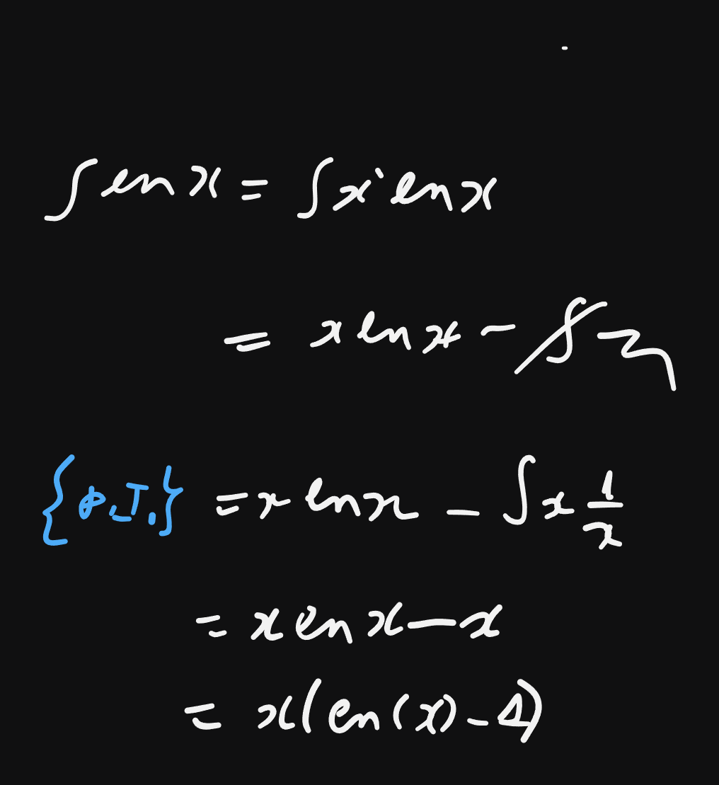

Weekly Summary
Week 1
Lecture 1
date:
Lecture 2
date:
Week 2
Lecture 1
date:
Lecture 2
date: 23/04/24
- fachschaft
- compiler explorer
- Small assembly example; modern compilers are very clever at optimizing
- assertions, pre- and post conditions, invariants.
- fast power algorithm, it’s correctness proof
- rules for calculating time complexity of sequential programs
- a common reccurence relation pattern that comes up often,
\[\begin{align} R(n) &= a, &&\text{if n = 1} \\ &= cn + d\cdot R(n/b) &&\text{if n > 1, divide and conquer} \end{align}\]
- complexity of this reccurence relation and its proof
- Intro to Graphs, basic definitions
Week 3
Lecture 1
date:
Lecture 2
date: 30/04/24
- simply linked list
- splicing
- arrays
- assembly realization of array access via the website compiler explorer link with c++ and rust. Differences between c++ and rust.
- memory allocation in c++ with
alloc()andfree() - time complexity of array memory allocation in c++ with
alloc(): an experiment pushBack()andpopBack()for arrays- their realization and complexity
Week 4
Lecture 1
date: 6/5/24
- introduction to amortized complexity
- amortized complexity analysis of
pushBack()andpopBack()operations: both \(\mathcal{O}(1)\)
- amortized complexity analysis of
- stacks and queues - introductory discussions
- double-ended queues
- ring buffer implementation of a queue
- introduction to hashing
Lecture 2
date: 07/05/24
- division by a constant is optimized by the compiler (this cannot be done for division by a variable)
- book recommendation: Hacker’s Delight
- Hashing:
- intro & some applications
- some defs:
- \(M \subseteq T\). \(M\): set of Elements of a certain type \(T\), that we want to store (or have stored) in a table and access via their keys.
- \(m\): number of memory slots.
- \(|M|\): total number of elements stored in the table.
- \(\text{key}: M\rightarrow Key\): Function that maps elements to their key values
- \(Key = im(key) = key[M]\): the set of key values (the range of the key function)
- \(h: Key\rightarrow [0, m)\): the hashing function that maps key values to memory slots \(0\dots m - 1\).
- pefect hashing: if there are more memory slots than possible key values, \(h\) can map each key to a single slot \(\Rightarrow\) over-optimistic, we don’t have so much memory, since usually \(|Key|\gg m\) (Number of possible key values much greater than number of slots).
- imperfect hashing: \(\exists e_1, e_2\in M\) s.t. \(e_1 \neq e_2\) but \(h(key(e_1)) = h(key(e_2))\). This is called collision.
- closed hashing: an example for imperfect hashing , where the elements of the table are simply linked lists, supporting the operations:
insert(e). Insert en element \(e\in M\)remove(k). Remove an element \(e\) whose key is \(k\), returning \(e\)find(k): Find element \(e\) with the keyk, return \(e\) if found.- Time-complexities:
insert(e): \(\mathcal{O}(1)\)remove(k): \(\mathcal{O}(\text{List length})\)find(k): \(\mathcal{O}(\text{List length})\)- worst case: bad hash function that maps all keys to the same slot ! \(\Rightarrow \mathcal{O}(|M|)\)
- Stochastic analysis of random hash functions & proofs of (with an introductory discussion of birthday paradox):
- theorem: random hash function is likely to be perfect if \(m \in \Omega(n^2)\)
- theorem: random hash functions lead to lists of length \(\mathcal{O}(1)\), if \(|M| \in \mathcal{O}(m)\)
Week 5
Lecture 1
date: 13/5/24
- Universal hashing functions: definition & Theorem 1 holds also for universal hashing functions
- A family of universal hashing functions, proof of theorem 1 for these functions
- another example for a universal hashing function based on bit matrix multiplication
- example: tabulation hashing
- open hashing: a different way to resolve collisions, without using linked lists, instead looking for the next free table slot:
- advantage: contigious address values \(\Rightarrow\) less cache misses, faster.
- bounded linear probing:
- insert & find algorithms, invariants.
- remove is more difficult \(\Rightarrow\) its implementation.
- intro to sorting
- intro to insertion sort.
Lecture 2
date:
Week 6
Lecture 1
date: 20/05/24
- online:
Lecture 2
date: 21/05/24
- programming example with compiler explorer: fibonacci iterative and recursive implementation, gcc optimization. (short detour: call stack) compiler can automatically implement tail recursion.
- insertion algorithms:
- insertion sort: pseudo-code implementation.
- merge sort:
- divide and conquer,
- merging (\(\mathcal{O}(n))\))
- time-complexity of merge sort: assuming (without loss of generality) \(n = 2^k\) leads to master theorem. (wlog: we can extend a list to be \(2^k\))
- \(\Theta(n\cdot\log(n))\) is the best we can do for comparison-based sorting
definition of comparison-based sorting, fundamental operations
any such algorithm must at least be able to differentiate between all \(n!\) permutations of the list \(\Rightarrow\) lower-bound analysis via a comparison tree.

partial integration
- quicksort: divide-and-conquer, but “reversed”
- complexity of quicksort (worst case is \(\mathcal{O}(n^2))\)
- Pivot is always the median \(\Rightarrow\) \(\mathcal{O}(n\cdot\log{n})\)
- problem: finding the median (a good pivot) is not easy.
- complexity-analysis:
Week 1
Lecture 1
date:
Lecture 2
date:
Week 1
Lecture 1
date:
Lecture 2
date:
Week 1
Lecture 1
date:
Lecture 2
date:
Week 1
Lecture 1
date:
Lecture 2
date:
Week 1
Lecture 1
date:
Lecture 2
date:
Week 1
Lecture 1
date:
Lecture 2
date:
Week 1
Lecture 1
date:
Lecture 2
date:
Week 1
Lecture 1
date:
Lecture 2
date:
Week 1
Lecture 1
date:
Lecture 2
date: